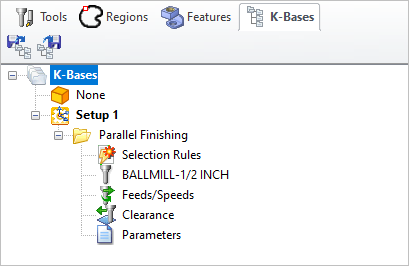
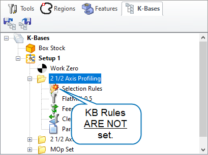
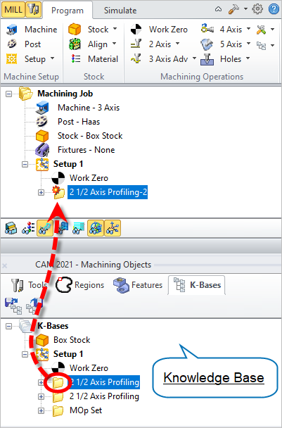
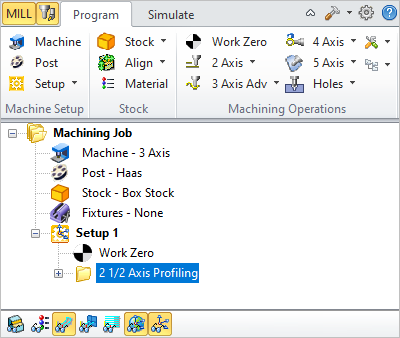

Available in: |
Xpress |
Standard |
Expert |
Professional |
Premium |
After a Knowledge Base is Loaded into the K-Bases tab of the Machining Objects Browser you can apply its operation definitions and selection rules to any current Setup in the Machining Browser. Here is the basic work flow:
1.Open a part file containing operations to use to create your Knowledge Base. 2.Create a Knowledge Base file. 3.Open a part that you want to apply the Knowledge Base to. 4.Load the Knowledge Base from the K-Bases tab of the Machining Objects Browser. 5.When asked if you want to set rules, pick No. 6.If desired, defined selection rules after the Knowledge Base is Loaded into the K-Bases tab. 7.Drag & Drop operations from the K-Bases into your Setup. 8.If no selection rules were set, open each operation in the Setup, assign Control Geometry and Regenerate. 9.If selection rules are set, simply Regenerate the operations in your Setup. 10.If Selection Rules are not set, open each operation in the Setup, select the Control Geometry and then Generate. |
 K-Bases tab of the Machining Objects Browser |
If Selection Rules have not been set in the Knowledge Base, the icon to the left of Selection Rules under each operation type will be flagged . To set the Selection Rules, double-left-click on this icon to display the Geometry Selection Rules dialog. See Set Knowledge Base Rules for information about using this dialog. If you choose NOT to set Selection Rules, you will need to define the Control Geometry for each operation in your Setup that was derived from the Knowledge Base.  K-Bases tab of the Machining Objects Browser |
Expanding an operation under the K-Bases tab displays the Selection Rules, Tool, Feeds/Speeds, Clearance and Parameters for that operation type in the Knowledge Base. You can Drag & Drop an operation type from the K-Bases tab up to your current Setup in the Machining Browser for programming.  Select operation, Drag and drop to Machining browser The operation is now available under the Machining Browser. Once you have defined the part geometry, you can edit the operation from the Machining Browser and generate the toolpath.  The operation is now available under Machining Browser
|